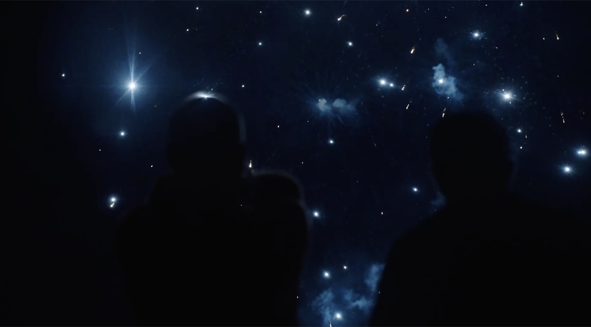
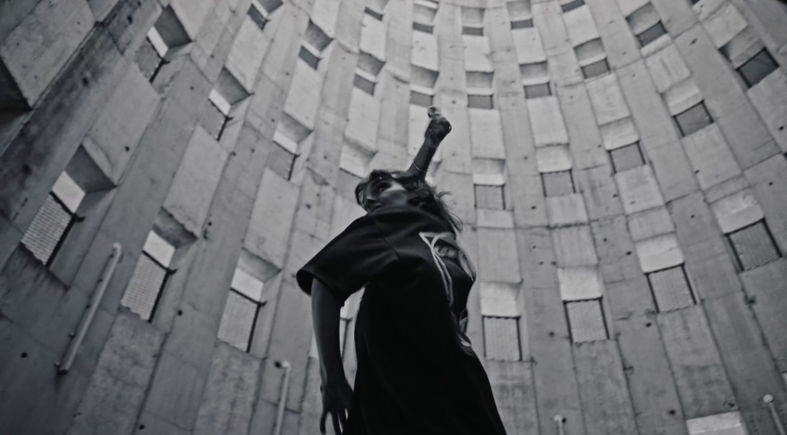
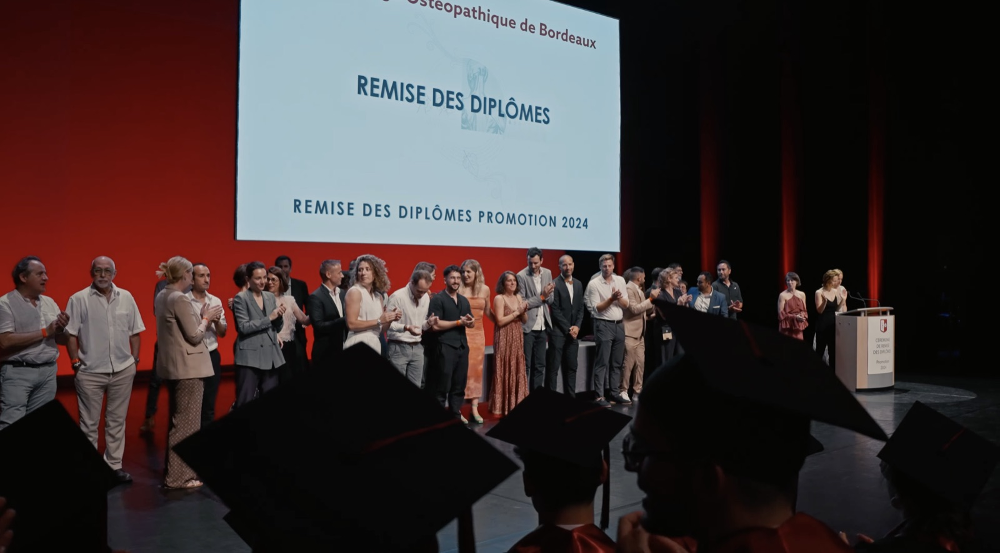

Studio de production vidéo · Bordeaux
Mauvais Grain.



Studio de production vidéo · Bordeaux



Observer plutôt que mettre en scène.
CorporateVotre stratégie mérite mieux qu'une vidéo. Elle mérite un film.
ImmobilierUn bien se visite. Un lieu, ça se ressent.

L'image au service de votre histoire.
Observer sans intervenir. Laisser les rencontres, les ambiances et la lumière naturelle guider le récit.

Construire le film autour de plans fixes. Le mouvement naît uniquement de la danseuse.
Tourner durant les dernières minutes du jour, pour une lumière douce et chaleureuse.

Prendre le temps d'observer. Un film contemplatif où chaque plan laisse respirer le paysage.

Une approche immersive, au plus près des étudiants, pour saisir les instants spontanés.

Se mêler au public : concerts, DJ, jeux de lumière et feu d'artifice.
Accompagner plutôt que diriger.
ÉvénementielUn événement ne dure qu'un soir. Son film, beaucoup plus longtemps.
ClipDonner une image à votre musique.
Une histoire bien racontée ne s'oublie pas.
94 quai des Chartrons, 33000 Bordeaux





Raconter plutôt que vendre.
Timéo Taris, fondateur
TourismeMettre en lumière vos paysages, vos expériences et l'identité d'un territoire.